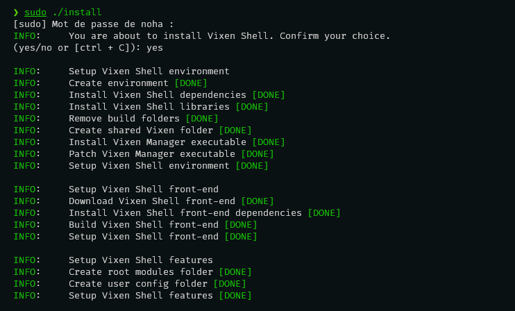

Install Vixen Shell
Install Vixen Shell
Prerequistes
Before getting started with Vixen Shell, make sure you have the following:
-
Operating System:
- A Linux distribution compatible with Wayland (e.g., Ubuntu, Fedora, Arch Linux, Manjaro Linux).
-
Window Manager:
- Sway, Hyprland, or any other window manager compatible with Wayland.
-
Languages and Technologies:
- Python: Ensure Python is installed (version 3.11 or higher).
- yarn: For managing dependencies and building front-end components.
-
Development Tools:
- A code editor or IDE (Visual Studio Code is recommended).
- Git for version control (Recommended).
-
Permissions and Access:
- Administrator or superuser access to install certain dependencies and perform system configurations.
Install
Yarn
-
Before proceeding with the installation, ensure that Yarn is installed on your system. You can check if Yarn is installed by running the following command in your terminal:
-
If Yarn is not installed or if the command returns an error, you can install Yarn using the appropriate method for your system.
- Go to the Vixen Shell repository and download the project archive in ZIP format.
-
Once the download is complete, locate the ZIP file in your download folder. Right-click on the archive and select the option to extract the files. You can also use the command line:
-
After extracting the files, navigate to the newly created directory:
-
In the extracted directory, run the installation script as an administrator with the following command:
-
Confirm your choice and this script will install Vixen Shell on your system.
All set! Vixen Shell is installed.

Post-install
-
To start, you can verify that Vixen Shell starts correctly by running the following command in a terminal:
If everything is working properly, Vixen Shell should start without any errors.
Type CTRL+C to exit Vixen Shell ...
-
System Extra Feature
Next, I recommend installing the additional system feature of Vixen Shell by running the following command:
This feature allows you to obtain information and execute commands on your system.Note
At the moment, the 'system' feature is still relatively limited, but it will be expanded in the future.
-
Hyprland Extra Feature
For Hypreland user, I strongly recommend installing the additional hypland feature. It will allow you to retrieve extensive information about the window manager as well as access to the UNIX socket that continuously broadcasts Hyprland events.
-
Vixen Shell Startup
To finish, all you need to do is configure Vixen Shell to start automatically when your window manager starts. (e.g., startup script, window manager configuration file - adapt the method according to your window manager or configuration)
Under Hyprland, you simply need to edit the configuration file (hyprland.conf) and add the following line to your startup section:
Uninstall Vixen Shell
-
To uninstall Vixen Shell from your system, simply type the following command:
-
Confirm your choice ...
Of course, Vixen Shell will be completely uninstalled.